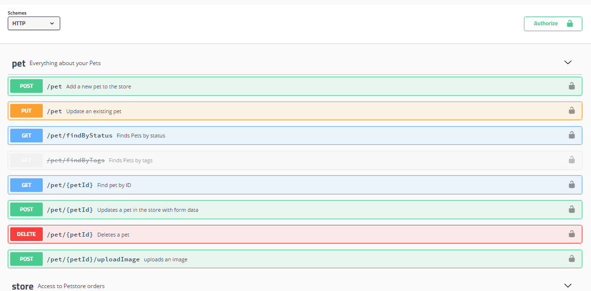

Swagger コアコンポーネント
Swagger は OpenAPI 仕様を中心に構築されたオープンソースのツールセットであり、RESTful API の設計、構築、記録、使用のために使用されます。
Swagger は API の構造を記述する標準化された方法を提供し、開発者とマシンの両方がソースコードや他のドキュメントにアクセスすることなく API の機能を理解できるようにします。
Swagger の核心的な価値は次のとおりです。
- 標準化：統一された API 記述形式を提供
- 可視化：インタラクティブな API ドキュメントを自動生成
- テスト可能性：ドキュメント内で直接 API エンドポイントをテストできる
- コード生成：複数の言語のクライアント・サーバーコード生成をサポート
Swagger コアコンポーネント
| コンポーネント | 入力 | 出力 | 適用段階 |
|---|---|---|---|
| Swagger Editor | 手動で作成する YAML/JSON | リアルタイムプレビュー可能な API ドキュメント | API設計段階 |
| Swagger UI | OpenAPI ファイル | インタラクティブな Web ドキュメント | 開発/テスト段階 |
| Swagger Codegen | OpenAPI ファイル | クライアント/サーバーコード | フロントエンド/バックエンド連携段階 |
コンポーネント連携フローチャート：
Swagger Editor（设计API） ↓ OpenAPI 规范文件（YAML/JSON） ↓ Swagger UI（展示文档） 或 Swagger Codegen（生成代码）

Swagger コアコンポーネントの詳細解説
1. Swagger Editor
Swagger Editor はブラウザベースのビジュアルエディタで、OpenAPI 仕様（YAML/JSON 形式）の作成とリアルタイムプレビューに使用されます。
Swagger Editor は構文ハイライト、自動補完、エラーチェックを提供します。
Swagger Editor のコード生成、保存、エクスポート機能は SmartBear API Hub に統合されました。アクセス先：https://try.platform.smartbear.com/new-organization。
使用シナリオ：
- API プロトタイプを素早く設計
- OpenAPI 仕様の構文を学習
オンラインエディタ Swagger Editor にアクセス：https://editor.swagger.io/
以下の YAML コードを入力します（簡単な GET /users インターフェースを定義）：
例
openapi: 3.0.3
info:
title: RUNOOB ユーザー管理システム
version: 1.0.0
paths:
/users:
get:
summary: ユーザー一覧を取得
responses:
'200':
description: 成功時にユーザー一覧を返す
content:
application/json:
schema:
type: array
items:
type: object
properties:
id:
type: integer
name:
type: string
右側に API ドキュメントとインタラクティブな UI がリアルタイムでレンダリングされます。

Swagger UI
Swagger UI は OpenAPI 仕様を視覚的な対話型ドキュメントに変換し、ブラウザ上で直接 API をテストできます。
Swagger UI はリクエスト例、レスポンスモデル、デバッグインターフェースを自動生成します。
Swagger UI: https://swagger.io/tools/swagger-ui/
使用シナリオ：
- チームで API ドキュメントを共有
- フロントエンド開発者がインターフェースをデバッグ
統合例（Node.js を例とする）、依存関係をインストール：
npm install swagger-ui-express swagger-jsdoc
swagger.js 設定ファイルを作成：
例
const options = {
definition: {
openapi: '3.0.0',
info: { title: 'ユーザーAPI', version: '1.0.0' },
},
apis: ['./routes/*.js'], // ルートファイル内のコメントをスキャン
};
const swaggerSpec = swaggerJSDoc(options);
module.exports = swaggerSpec;
Express で UI をマウント：
例
const swaggerUi = require('swagger-ui-express');
const swaggerSpec = require('./swagger');
const app = express();
app.use('/api-docs', swaggerUi.serve, swaggerUi.setup(swaggerSpec));
http://localhost:3000/api-docs にアクセスしてドキュメントを確認します。

Swagger Codegen
Swagger Codegen は OpenAPI 仕様に基づいて、クライアント SDK（Java、Python など）またはサーバースタブコード（Spring、Flask など）を自動生成します。
Swagger Codegen はカスタムテンプレートをサポートしています。
ダウンロードページ：https://swagger.io/tools/swagger-codegen/
使用シナリオ：
- API 呼び出し用のクライアントコードを迅速に生成
- サーバーインターフェースの自動化開発
操作例（コマンドラインで Java クライアントを生成）、Swagger Codegen CLI をダウンロード：
wget https://repo1.maven.org/maven2/io/swagger/codegen/v3/swagger-codegen-cli/3.0.35/swagger-codegen-cli-3.0.35.jar -O swagger-codegen-cli.jar
コードを生成：
java -jar swagger-codegen-cli.jar generate \ -i https://petstore.swagger.io/v2/swagger.json \ -l java \ -o ./petstore-api-client
Swagger Hub（オプション拡張）
Swagger Hub は Swagger のクラウドプラットフォームで、協調設計、バージョン管理、ドキュメントのホスティングを提供します。
Swagger Hub はチームコラボレーションと API ライフサイクル管理をサポートします。
使用シナリオ：
- エンタープライズレベルの API プロジェクト管理
- オンラインコラボレーションが必要な分散チーム
クリックしてノートを共有
<p style="font-size:14px;">ノートはこの記事の内容を拡張したものでなければなりません！</p><br> <p style="font-size:12px;"><a href="../tougao.html" target="_blank">記事投稿は、ここをクリックしてください</a></p> <p style="font-size:14px;"><a href="../w3cnote/runoob-user-test-intro.html" target="_blank">招待コードの取得方法</a></p> <h3 class="text-muted"><i class="fa fa-info-circle" aria-hidden="true"></i> ノートを共有する前に<a href=";.html" class="runoob-pop">ログイン</a>してください！</h3> <p><a href="../w3cnote/runoob-user-test-intro.html" target="_blank">招待コードの取得方法</a></p>